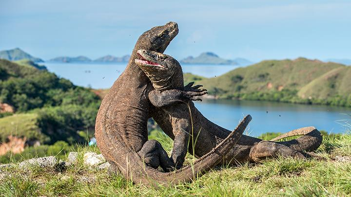
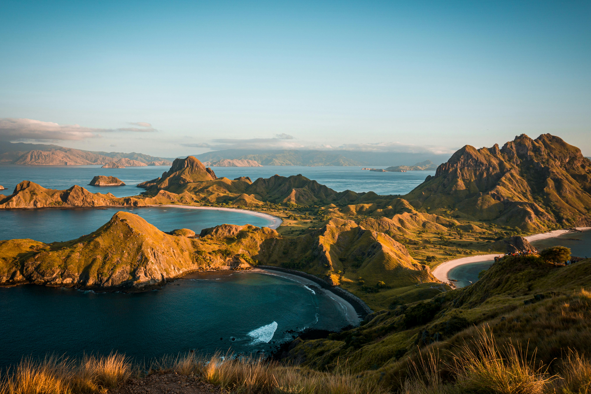
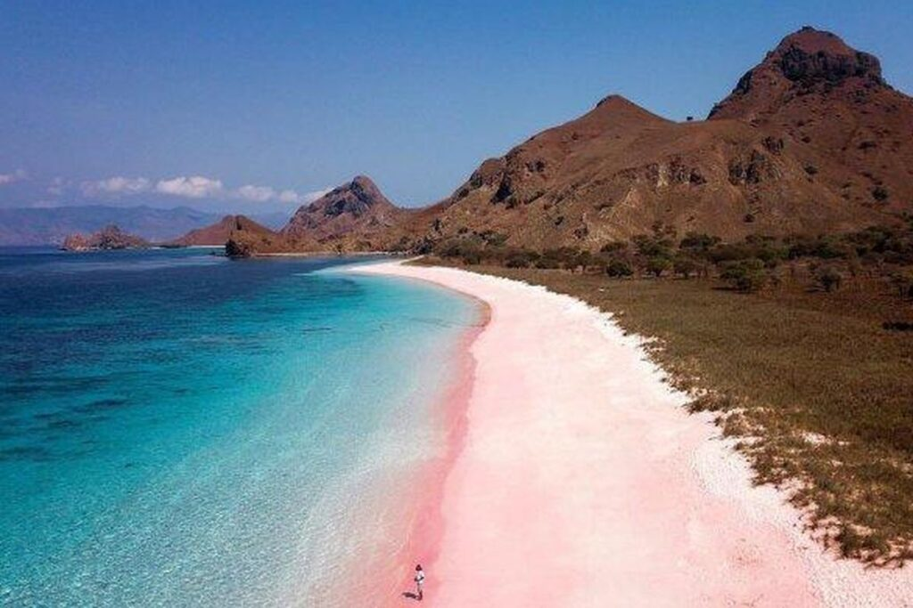
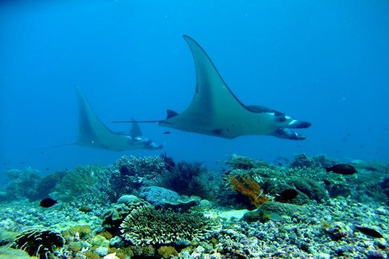
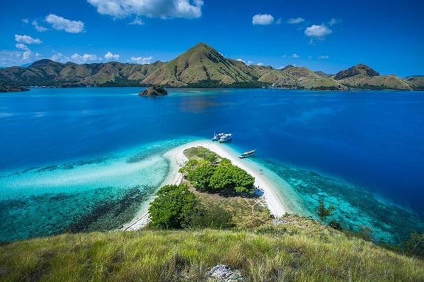
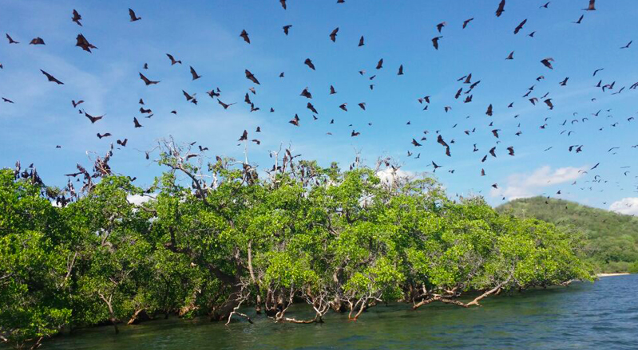
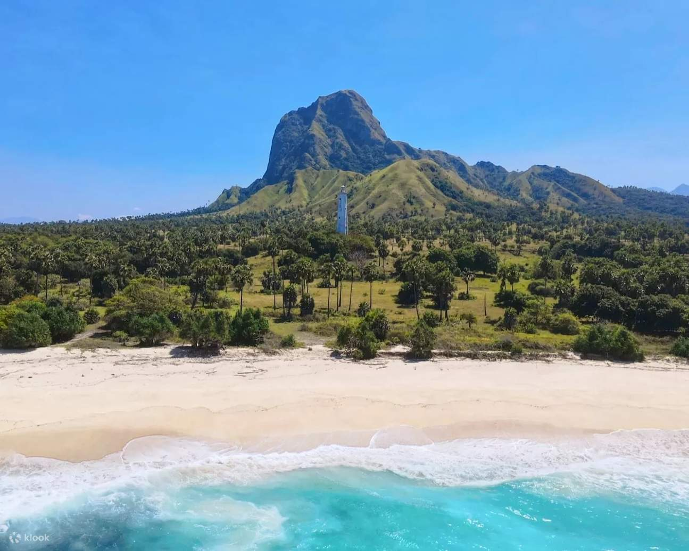
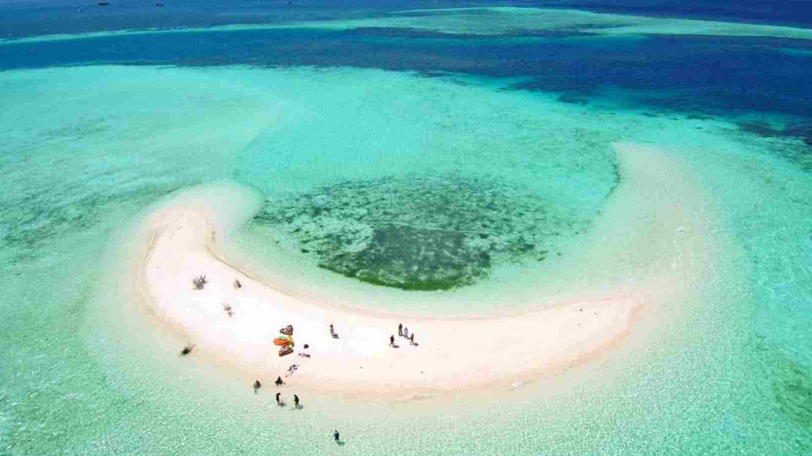

Nikmati pengalaman sailing trip menjelajahi Taman Nasional Komodo, trekking Pulau Padar, snorkeling di laut jernih, dan bertemu komodo langsung di habitat aslinya.
Booking Trip SekarangTraveler Bergabung
Trip Berangkat
Customer Satisfaction
Labuan Bajo adalah gerbang menuju keajaiban alam Taman Nasional Komodo. Di sini Anda dapat menjelajahi pulau-pulau eksotis, snorkeling di laut biru yang jernih, dan melihat komodo langsung di habitat aslinya.
Melalui Basabasi Trip, kami menghadirkan pengalaman sailing trip yang aman, seru, dan penuh kenangan. Dengan kapal yang nyaman dan kru yang berpengalaman, perjalanan Anda menjelajahi Komodo akan menjadi petualangan yang tak terlupakan.
Tanya Detail Trip







IDR 1.300K / Pax
Start 2.400K / Pax
Start 2.700K / Pax
Ikuti perjalanan seru menjelajahi Taman Nasional Komodo dengan kapal phinisi.
10:00 — Pick Up Hotel / Airport
Penjemputan dari hotel atau bandara di Labuan Bajo.
10:30 — Briefing & Sail to Kelor Island
Briefing singkat sebelum perjalanan dimulai menuju Pulau Kelor.
12:00 — Kelor Island Trekking
Pendakian singkat menikmati panorama laut Labuan Bajo.
13:00 — Lunch Time
Makan siang di atas kapal sambil menikmati perjalanan.
14:30 — Manjarite Island Snorkeling
Snorkeling di spot terumbu karang yang indah dengan air laut jernih.
17:00 — Kalong Island Sunset
Menikmati sunset sambil melihat ribuan kelelawar keluar dari Pulau Kalong.
19:30 — Dinner Time
21:00 — Free Program & Rest
24:00 — Sailing to Padar Island
04:30 — Sunrise Trekking Padar Island
Pendakian ke puncak Pulau Padar untuk menikmati panorama ikonik Labuan Bajo.
08:30 — Breakfast Time
09:30 — Pink Beach Snorkeling
Snorkeling di pantai berpasir merah muda yang unik.
12:00 — Lunch Time
13:00 — Komodo Island Trekking
Melihat Komodo Dragon bersama ranger di habitat aslinya.
14:30 — Taka Makassar Sandbank
Bersantai di pulau pasir timbul yang dikelilingi laut biru jernih.
16:00 — Manta Point Snorkeling
Berenang bersama manta ray di salah satu spot terbaik.
19:30 — Dinner Time & BBQ
21:00 — Free Program & Rest
05:00 — Sunrise on Boat
Menikmati matahari terbit dari atas kapal.
07:00 — Breakfast Time
07:30 — Siaba Turtle Point Snorkeling
Snorkeling di spot yang terkenal dengan penyu laut.
10:00 — Return to Labuan Bajo
11:30 — Last Lunch
12:00 — Drop Off Hotel / Airport
Waktu itinerary dapat berubah menyesuaikan kondisi cuaca, arus laut, dan keputusan guide di lapangan.
Tripnya sangat seru dan guide ramah.
Andi – JakartaSunrise di Pulau Padar luar biasa.
Nanda – BandungCrew kapal profesional dan makanannya enak.
Kevin – Surabaya